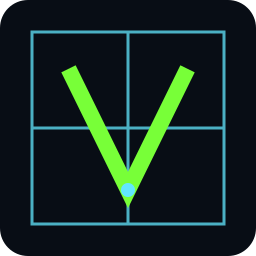

01 / RUN
INTERPRETERstatus: ready

VexLangAn alpha interpreter and typed-IR prototype for experimenting with syntax, semantics, and deliberate lowering.
1// a tiny Vex program2fn main() -> i32 {3 let answer = (10 + 2) * 3;4 return answer;5}
TYPED IR / VERIFIED%0: i32 = const 10%1: i32 = const 2%2: i32 = add %0, %1%3: i32 = const 3%4: i32 = mul %2, %3answer: i32
status: ready
status: valid
status: alpha
Vex keeps the core visible: declarations, expressions, control flow, functions, records, arrays, diagnostics, and a typed intermediate representation that refuses to hide unsupported behavior.
Minimal statements, familiar operators, typed functions, records, arrays, and a language surface you can hold in your head.
let · fn · record · whileBounded execution, checked arithmetic, explicit diagnostics, and hard failures when a program crosses a supported boundary.
parse · infer · verifyBuild deterministic textual IR first, then explore the verified scalar subset through experimental QBE IL.
IR · target · qbeIt is not a production compiler or native toolchain yet. QBE emits intermediate language only; it does not assemble, link, or package a native executable. Syntax and APIs may evolve.
# try the interpreter cargo run -- run program.vex # inspect the typed lowering cargo run -- ir program.vex # explore experimental QBE IL cargo run -- qbe program.vex